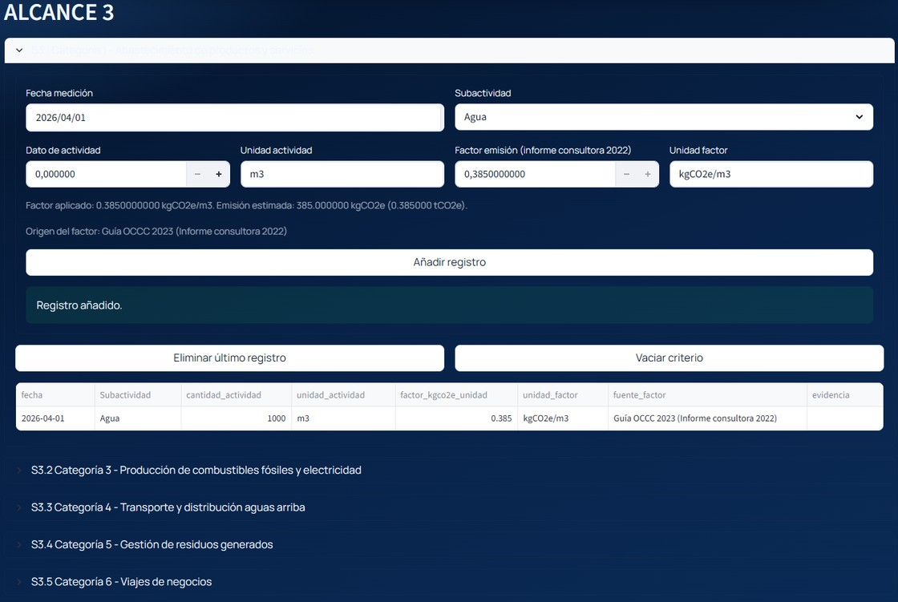

Calculadora interna de huella de carbono para Isaval
Objetivo: sustituir un cálculo anual externalizado a consultora por una aplicación interna capaz de calcular Alcances 1, 2 y 3, generar un informe técnico y preparar el terreno para automatizar el proceso con datos internos.
El proyecto nace por tres motivos claros: ahorrar un coste recurrente de consultoría, reducir tiempo administrativo interno y ganar autonomía sobre una obligación legal y de sostenibilidad.
Qué se ha construido
La aplicación se ha confeccionado mediante el estudio de las reglas del MITECO para los Alcances 1 y 2, y apoyándose en los criterios históricos presentes en los informes de huella emitidos hasta ahora para Alcance 3.
El sistema permite introducir manualmente consumos, ejecutar el cálculo de emisiones y generar un informe final similar al entregado por una consultora externa. La intención posterior es conectarlo con ERP y Docuware para llevar el cálculo hacia una lógica más automática y continua.
Qué confirma la bitácora
- El backend metodológico cubre Alcances 1, 2 y 3 con validaciones y motor de cálculo ya implementados.
- La aplicación ya genera PDF corporativo con metodología, resultados, trazabilidad y anexos.
- Se han cerrado bloques técnicos como OCR, dual reporting de Scope 2 y conectores base ETL.
- La validación más reciente refleja diferencias no superiores al 0,001% frente a informes ya entregados por consultoras.
Por qué es relevante
- Reduce gasto recurrente anual de 5.000-6.000 euros.
- Reduce tiempo administrativo para reunir y procesar datos.
- Internaliza una capacidad sensible de cumplimiento y sostenibilidad.
- Prepara una futura lectura de emisiones mucho más cercana al tiempo real.
Capturas del sistema

Vista de captura por criterios y centro de control del cálculo por Alcances 1, 2 y 3.

Captura manual de consumos y parámetros para Alcance 1.

Captura de datos de electricidad y criterios metodológicos para Alcance 2.

Captura por subactividad y unidad de actividad para Alcance 3.

Resultados consolidados del cálculo y generación del informe PDF final desde la aplicación.
Informe generado
La aplicación no se queda en el cálculo. También genera un informe técnico propio con portada, índice, resultados, metodología, trazabilidad y anexos, en un formato ya muy próximo al entregable que antes hacía la consultora.
Informe de ejemplo adjunto:
media/informe-huella-organizacion-2026.pdf
Conclusión
La propuesta convierte una obligación externa y periódica en una capacidad interna, precisa y escalable. Su valor está en el ahorro, en la agilidad y en la autonomía que gana la compañía sobre un proceso cada vez más relevante para regulación, sostenibilidad y reputación.